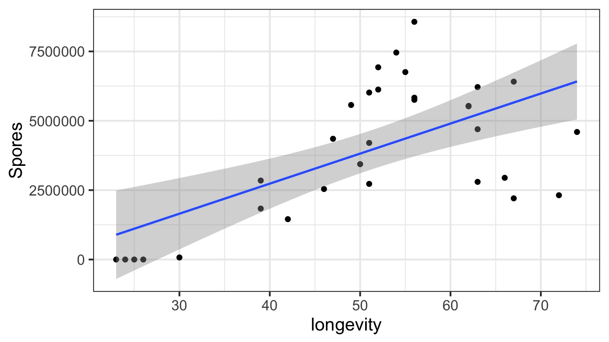
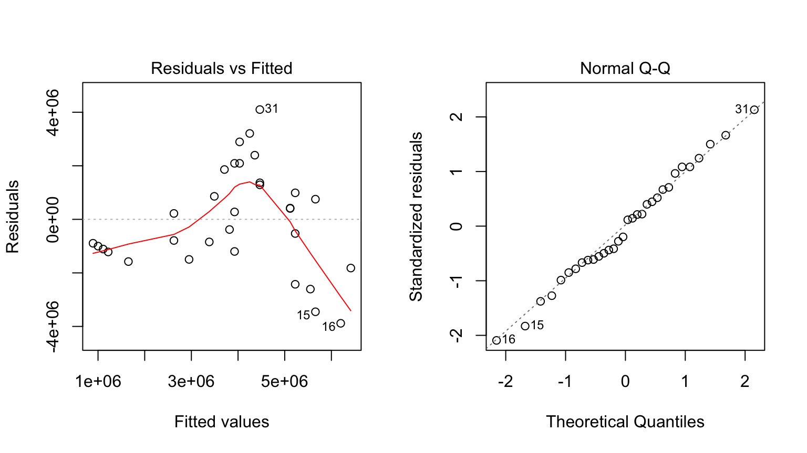
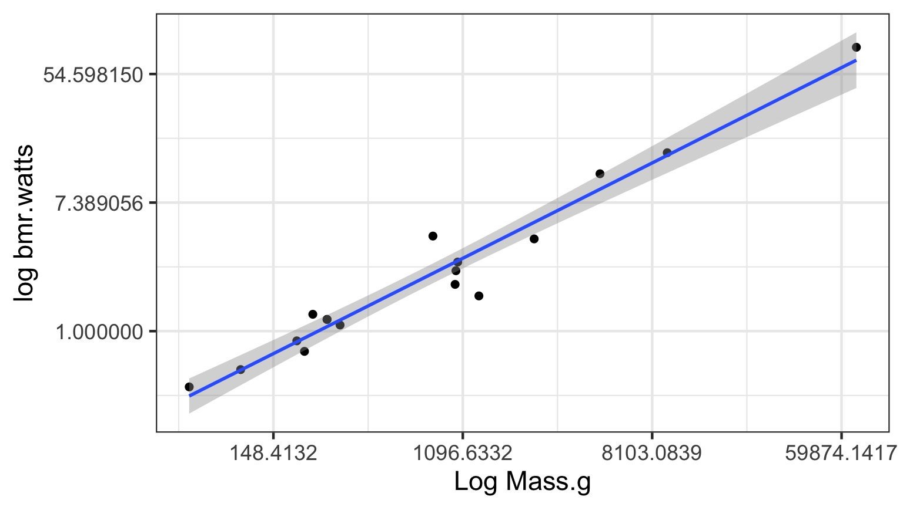
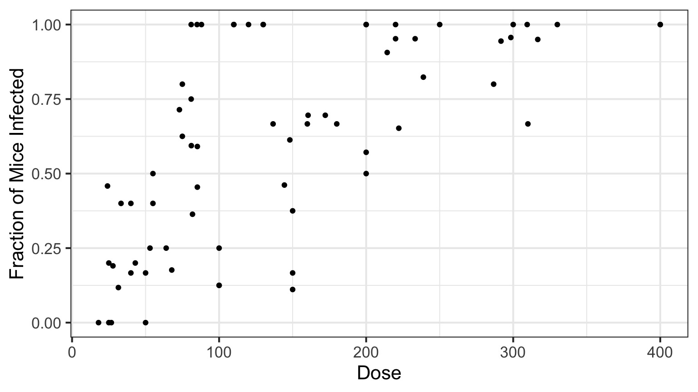
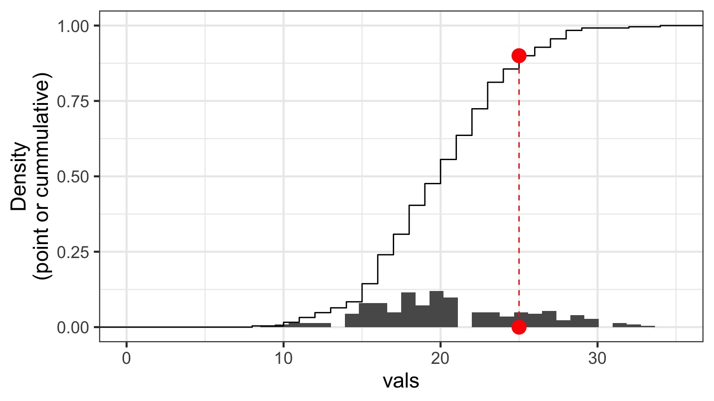

Nonlinear Regression and Genearlized Linear Models
Going the Distance
- Nonlinear Models with Normal Error
- Nonlinear Terms
- Wholly Nonlinear Models
- Nonlinear Terms
- Generalized Linear Models
- Logistic Regression
- Assessing Error Assumptions
- Gamma Regression with Log Links
- Poisson Regression and Overdispersion
The General Linear Model
\[\Large \boldsymbol{Y} = \boldsymbol{\beta X} + \boldsymbol{\epsilon}\]- We have seen this model can accomodate interaction (products)
- X can also have other nonlinear terms
- The key is that nonlinear terms have coefficients and add up
- “Linear” data generating process
- ML, Bayes, and Algorithmic Least Squares can all fit these models
Daphnia Parasites

Daphnia Parasites

Does this looks right?

What do you do when you don’t have a line?
- Pray
- If nonlinear terms are additive fit with OLS
- Transform? But think about what it will do to error.
- Nonlinear Least Squares
- Generalized Linear Models
Is Model Assessment Wonky?

What is our Data Generating Process?
The General Linear Model
\[\Large \boldsymbol{Y} = \boldsymbol{\beta X} + \boldsymbol{\epsilon}\]
Why not have Spores = Longevity + Longevity2
Those Posthocs are All Right?
Squared?

Going the Distance
- Nonlinear Models with Normal Error
- Nonlinear Terms
- Wholly Nonlinear Models
- Nonlinear Terms
2. Generalized Linear Models
- Assessing Error Assumptions
3. Poisson Regression
4. Logistic Regression
What if the relationship isn’t additive?

Metabolic Rate = a ∗ massb
Transformations
- log(y): exponential
- log(y) and log(x): power function
- arcsin(sqrt(y)): bounded data
- logit(y): for bounded data (more well behaved)
- Box-Cox Transform
May have to add 0.01, 0.5, or 1 in cases with 0s
You must ask, what do the transformed variables mean?
Log-Log Fit

log(Metabolic Rate) = a + b*log(mass) + error
Careful About Error Structure
log(MetabolicRate) = log(a) + b ∗ log(mass) + error implies
\[Metabolic Rate = a ∗ mass^b ∗ error\]
but we often want
\[Metabolic Rate = a ∗ mass^b + error\]
Nonlinear Least Squares
Algorithmically searches to minimize \(\sum{(\hat{Y}-Y_i)^2}\)
Nonlinear Likelihood
library(bbmle)
primate.mle <- mle2(bmr.watts ~ dnorm(a*mass.g^b, sigma),
data=metabolism,
start=list(a = 0.0172858,
b = 0.74160,
sigma=5),
optimizer = "nlminb",
lower=c(sigma=1e-7))
But this may not solve the problem as…
Not All Error Generating Processes Are Normal

Going the Distance
- Nonlinear Models with Normal Error
- Nonlinear Terms
- Wholly Nonlinear Models
- Nonlinear Terms
- Generalized Linear Models
- Logistic Regression
- Assessing Error Assumptions
- Gamma Regression with Log Links
- Poisson Regression and Overdispersion
Infection by Cryptosporidium
Cryptosporidum Infection Rates

This is not linear or gaussian
Why?
The General Linear Model
\[\Large \boldsymbol{Y} = \boldsymbol{\beta X} + \boldsymbol{\epsilon}\]
\[\boldsymbol{\epsilon} \sim N(\boldsymbol{0}, \boldsymbol{\sigma})\]
The General(ized) Linear Model
\[\Large \boldsymbol{\hat{Y}_{i}} = \boldsymbol{\beta X_i} \]
\[\Large Y_i \sim \mathcal{N}(\hat{Y_i},\sigma^{2})\]
The General(ized) Linear Model
\[\Large \boldsymbol{\eta_{i}} = \boldsymbol{\beta X_i} \]
\[\Large \hat{Y_i} = \eta_{i}\] Identity Link Function
\[\Large Y_i \sim \mathcal{N}(\hat{Y_i},\sigma^{2})\]
A Generalized Linear Model with a Log Link
\[\Large \boldsymbol{\eta_{i}} = \boldsymbol{\beta X_i} \]
\[\Large Log(\hat{Y_i}) = \eta_{i}\] Log Link Function
\[\Large Y_i \sim \mathcal{N}(\hat{Y_i},\sigma^{2})\]
Log Link
Isn’t this just a transformation?
Aren’t we just doing \[\Large \boldsymbol{log(Y_{i})} = \boldsymbol{\beta X_i} + \boldsymbol{\epsilon_i}\]A Generalized Linear Model with a Log Link
\[\Large \boldsymbol{\eta_{i}} = \boldsymbol{\beta X_i} \]
\[\Large Log(\hat{Y_i}) = \eta_{i}\]
\[\Large Y_i \sim \mathcal{N}(\hat{Y_i},\sigma^{2})\] Error is Normal
But This is Not Normal
The Generalized Linear Model Writ Large
\[\boldsymbol{\eta} = \boldsymbol{\beta X}\]
\[f(\boldsymbol{\hat{Y}}) = \boldsymbol{\eta}\]
f(y) is called the link function
\[\boldsymbol{Y} = E(\boldsymbol{\hat{Y}}, \theta)\]
E is any distribution from the Exponential Family
\(\theta\) is an error parameter, and can be a function of Y
Generalized Linear Models: Error
Basic Premise:
The error distribution is from the exponential family
- e.g., Normal, Poisson, Binomial, and more.
For these distributions, the variance is a funciton of the fitted value on the curve: \(var(Y_i) = \theta V(\mu_i)\)
For a normal distribution, \(var(\mu_i) = \theta*1\) as \(V(\mu_i)=1\)
For a poisson distribution, \(var(\mu_i) = 1*\mu_i\) as \(V(\mu_i)=\mu_i\)
Common Errors from the Exponential Family used in GLMs
| Error Generating Proces | Common Use | Typical Data Generating Process Shape |
|---|---|---|
| Log-Linear | Error accumulates additively, and then is exponentiated | Exponential |
| Binomial | Frequency, probability data | Logistic |
| Poisson | Count data | Exponential |
| Gamma | Waiting times | Inverse or exponential |
The Exponential Family

McElreath’s Statistical Rethinking
Binomial Distribution
\[ Y_i \sim B(prob, size) \]
- Discrete Distribution
- prob = probability of something happening (% Infected)
- size = # of discrete trials
- Used for frequency or probability data
- We estimate coefficients that influence prob
Generalized Linear Models: Link Functions
Basic Premise:
We have a linear predictor, \(\eta_i = a+Bx\)
That predictor is linked to the fitted value of \(Y_i\), \(\mu_i\)
We call this a link function, such that \(g(\mu_i) = \eta_i\)
For example, for a linear function, \(\mu_i = \eta_i\)
For an exponential function, \(log(\mu_i) = \eta_i\)
Logit Link

McElreath’s Statistical Rethinking
Other Common Links
- Identity: \(\mu = \eta\)
- e.g. \(\mu = a + bx\)
- e.g. \(\mu = a + bx\)
- Log: \(log(\mu) = \eta\)
- e.g. \(\mu = e^{a + bx}\)
- e.g. \(\mu = e^{a + bx}\)
- Logit: \(logit(\mu) = \eta\)
- e.g. \(\mu = \frac{e^{a + bx}}{1+e^{a + bx}}\)
- e.g. \(\mu = \frac{e^{a + bx}}{1+e^{a + bx}}\)
- Inverse: \(\frac{1}{\mu} = \eta\)
- e.g. \(\mu = (a + bx)^{-1}\)
So, Y is a Logistic Curve
\[Probability = \frac{1}{1+e^{\beta X}}\]
Generalized Linear Model with a Logit Link
\[\Large \boldsymbol{\eta_{i}} = \boldsymbol{\beta X_i} \]
\[\Large Logit(\hat{Y_i}) = \eta_{i}\] Logit Link Function
\[\Large Y_i \sim \mathcal{B}(\hat{Y_i}, size)\]
Logitistic Regression

Generalized Linear Model with Logit Link in R
OR, with Success and Failures
Our two big questions
- Does our model explain more variation in the data than a null model?
- Are the parameters different from 0?
Analysis of Model Results
| LR Chisq | Df | Pr(>Chisq) | |
|---|---|---|---|
| Dose | 233.8357 | 1 | 0 |
And logit coefficients
| term | estimate | std.error | statistic | p.value |
|---|---|---|---|---|
| (Intercept) | -1.4077690 | 0.1484785 | -9.481298 | 0 |
| Dose | 0.0134684 | 0.0010464 | 12.870912 | 0 |
The Odds
\[Odds = \frac{p}{1-p}\]\[Log-Odds = Log\frac{p}{1-p} = logit(p)\]
The Meaning of a Logit Coefficient
Logit Coefficient: A 1 unit increase in a predictor = an increase of \(\beta\) increase in the log-odds of the response.\[\beta = logit(p_2) - logit(p_1)\]
\[\beta = Log\frac{p_1}{1-p_1} - Log\frac{p_2}{1-p_2}\]
We need to know both p1 and \(\beta\) to interpret this.
If p1 = 0.7, \(\beta\) = 0.01347, then p2 = 0.702
But What About Assumptions?
- Should still be no fitted v. residual relationship
- But QQ plots lose meaning
- Not a normal distribution
- Mean scales with variance
- Also many types of residuals
- Deviance, Pearson, raw, etc.
Randomized quantile residuals
- If model fits well, quantiles of residuals should be uniformly distributed
- I.E., for any point, if we had its distribution, there should be no bias in its quantile
- We do this via simulation
- Works for many models, and naturally via Bayesian simuation
Randomized quantile residuals: Steps
- Get 1000 (or more!) simulations of model coefficients
- For each response (y) value, create an empirical distribution from the simuations
- For each response, determine it’s quantile from that empirical distribution
- The quantiles of all y values should be uniformly distributed
- QQ plot of a uniform distribution!
- QQ plot of a uniform distribution!
Randomized quantile residuals: Visualize

Randomized quantile residuals: Visualize

Randomized quantile residuals: Visualize

Randomized quantile residuals: Visualize

Randomized quantile residuals: Visualize

Quantile Residuals for Mouse GLM
Are different quantiles of prediction-quantile residual relationship flat?
If not - overdispersion - i.e. variance and prediction not scaling well
Going the Distance
- Nonlinear Models with Normal Error
- Nonlinear Terms
- Wholly Nonlinear Models
- Nonlinear Terms
- Generalized Linear Models
- Logistic Regression
- Assessing Error Assumptions
- Gamma Regression with Log Links
- Poisson Regression and Overdispersion
Generalized Linear Models Errors
| Error Generating Proces | Common Use | Typical Data Generating Process Shape |
|---|---|---|
| Log-Linear | Error accumulates additively, and then is exponentiated | Exponential |
| Poisson | Count data | Exponential |
| Binomial | Frequency, probability data | Logistic |
| Gamma | Waiting times | Inverse or exponential |
How long should you fish?

Example from http://seananderson.ca/2014/04/08/gamma-glms/
Mo’ Fish = Mo’ Variance
The Gamma Distribution
\[Y_i \sim Gamma(shape, scale)\]
- Continuous Distribution, bounded at 0
- Used for time data
- \(shape\) = number of events waiting for
- \(scale\) = time for one event
- Variance increases with square mean
The Gamma Distribution: Rate = 1
The Gamma Distribution: Shape = 5
The Gamma Distribution in Terms of Fit
\[Y_i \sim Gamma(shape, scale)\]
For a fit value \(\hat{Y_i}\):
- \(shape = \frac{\hat{Y_i}}{scale}\)
- \(scale = \frac{\hat{Y_i}}{shape}\)
- Variance = \(shape \cdot scale^2\)
The Gamma Fit with a Log Link
| LR Chisq | Df | Pr(>Chisq) | |
|---|---|---|---|
| time_fishing | 93.38621 | 1 | 0 |
| Estimate | Std. Error | t value | Pr(>|t|) | |
|---|---|---|---|---|
| (Intercept) | 0.5399 | 0.1752 | 3.0812 | 0.0027 |
| time_fishing | 1.1304 | 0.1158 | 9.7637 | 0.0000 |
Diagnostics of Residuals
Gamma Fit on a Plot
Going the Distance
- Nonlinear Models with Normal Error
- Nonlinear Terms
- Wholly Nonlinear Models
- Nonlinear Terms
- Generalized Linear Models
- Logistic Regression
- Assessing Error Assumptions
- Gamma Regression with Log Links
- Poisson Regression and Overdispersion
What is the relationship between kelp holdfast size and number of fronds?

What About Kelp Holdfasts?

How ’bout dem residuals?
What is our data and error generating process?
What is our data and error generating process?
- Data generating process should be exponential - No values less than 1
- Error generating process should be Poisson - Count data
What is our data and error generating process?
Quantile Residuals for Kelp GLM with Log Link
Ruh Roh! What happened? Overdispersion of Data!
- When the variance increases faster than the mean, our data is overdispersed
- This can be solved with different distributions whose variance have different properties
- OR, we can fit a model, then scale it’s variance posthoc with a coefficient
- The likelihood of these latter models is called a Quasi-likelihood, as it does not reflect the true spread of the data
Prediction Error from Poisson GLM
How do we test for overdispersion?
Solutions:
- Quasi-Poisson
- Basically, Variance = \(\theta\hat{Y}\)
- Posthoc estimation of \(\theta\) - Also a similar quasibinomial - Need to use QAIC for IC comparison
- Negative Binomial
- Variance = \(\hat{Y_i}^2 + \kappa\hat{Y_i}^2\)|$
- Increases with the square, not linearly
How to tell QP v. NB Apart
- For bins of fitted values, get the average squared residual
- Is that relationship linear or squared?
- Ver Hoef and Boveng 2007
How to tell QP v. NB Apart
How to tell QP v. NB Apart
Is this linear?
Fits
OR
QuasiPoisson Results
Call:
glm(formula = FRONDS ~ HLD_DIAM, family = quasipoisson(link = "log"),
data = kelp)
Deviance Residuals:
Min 1Q Median 3Q Max
-5.9021 -2.3871 -0.5574 1.6132 6.5117
Coefficients:
Estimate Std. Error t value Pr(>|t|)
(Intercept) 1.778059 0.160455 11.081 < 2e-16 ***
HLD_DIAM 0.023624 0.002943 8.027 1.45e-12 ***
---
Signif. codes: 0 '***' 0.001 '**' 0.01 '*' 0.05 '.' 0.1 ' ' 1
(Dispersion parameter for quasipoisson family taken to be 7.852847)
Null deviance: 1289.17 on 107 degrees of freedom
Residual deviance: 832.56 on 106 degrees of freedom
(32 observations deleted due to missingness)
AIC: NA
Number of Fisher Scoring iterations: 5Negative Binomial Results
Call:
glm.nb(formula = FRONDS ~ HLD_DIAM, data = kelp, init.theta = 2.178533101,
link = log)
Deviance Residuals:
Min 1Q Median 3Q Max
-2.3712 -0.9699 -0.2338 0.5116 1.9956
Coefficients:
Estimate Std. Error z value Pr(>|z|)
(Intercept) 1.657831 0.166777 9.940 < 2e-16 ***
HLD_DIAM 0.026365 0.003707 7.113 1.14e-12 ***
---
Signif. codes: 0 '***' 0.001 '**' 0.01 '*' 0.05 '.' 0.1 ' ' 1
(Dispersion parameter for Negative Binomial(2.1785) family taken to be 1)
Null deviance: 165.63 on 107 degrees of freedom
Residual deviance: 114.49 on 106 degrees of freedom
(32 observations deleted due to missingness)
AIC: 790.23
Number of Fisher Scoring iterations: 1
Theta: 2.179
Std. Err.: 0.336
2 x log-likelihood: -784.228 Prediction Interval for QP
Looks Good!
Our Nonlinear and Non-Normal Adventure
- You MUST think about your data and error generating process
- For any data generating process, we can build whatever model we’d like
- BUT, think about the resulting error, and fit accordingly
- GLMs are but a beginning
- We can cook up a lot of different error structures, and will in the future!
- See the package
betaregfor example - it’s just another glm!
- See the package